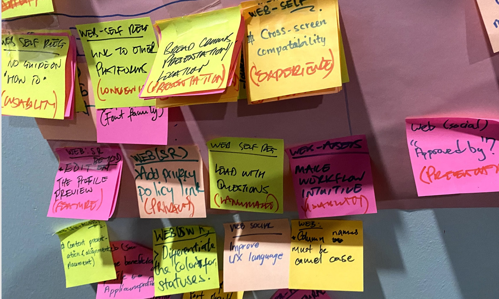
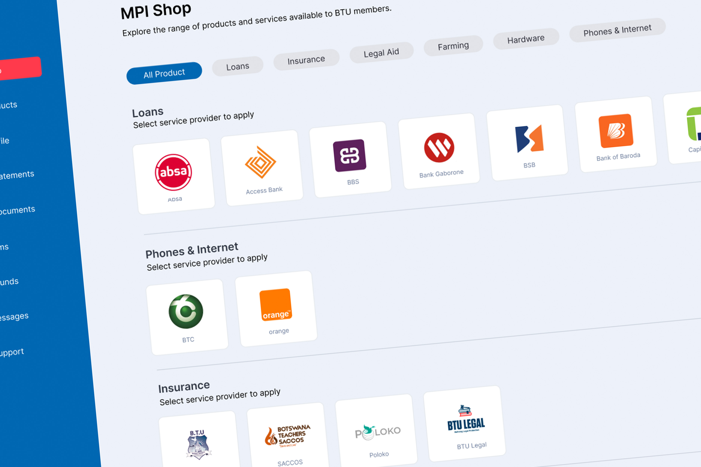
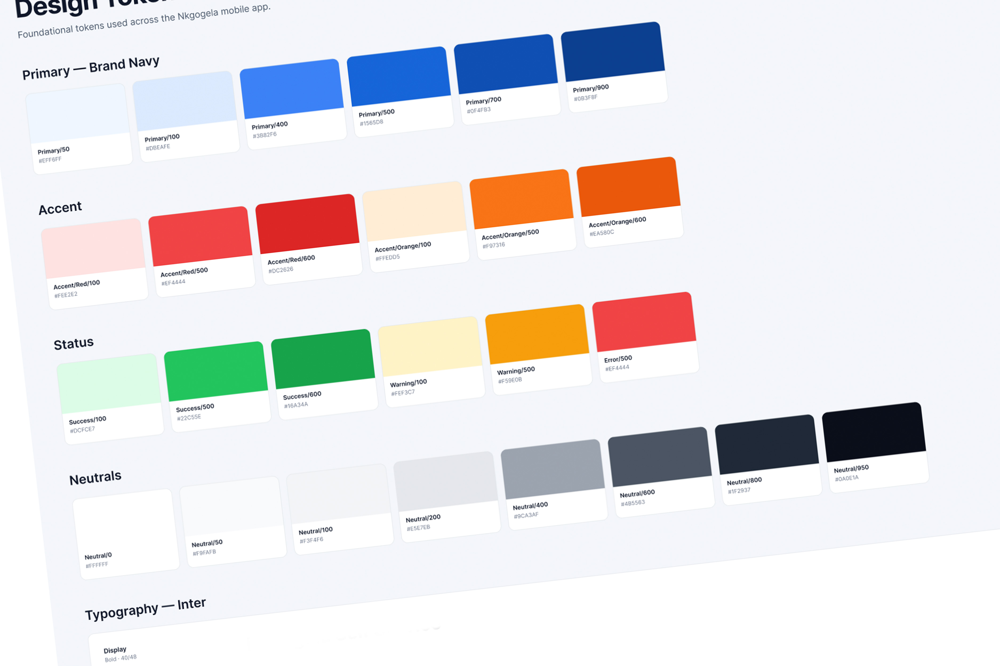

Affinity mapping of interview data and the current-state journey map for walk-in applications.
MPI (Botswana Teachers Union) — multi-product self-service platform spanning telco, legal services, loans, funeral insurance, merchandise and adjacent member benefits. Frontline partners include BTC, Orange Botswana, banks, insurance and others.

MPI (the Botswana Teachers Union) operates a member benefits programme spanning telecommunications, legal services, loan facilitation, funeral insurance, merchandise, and a growing set of adjacent products. Each product had been added to the union's offering over time, often through partnerships with separate providers.
The result: every product had its own paper application form, its own pricing logic, and its own approval workflow. Members applying for more than one benefit filled out the same personal information repeatedly. Frontline staff cross-referenced applications by hand. There was no shared data layer, no unified visual identity, and no scalable way to add new products to the offering.
Before any design decisions, I led a discovery phase to understand both sides of the experience: how members navigate (and struggle through) the application process, and how MPI staff actually run the operation behind the counter.
Conversations with users about how they discover, apply for, and renew union benefits. What they understand, what confuses them, where they ask for help.
Teachers · members across regions and tenureConversations with MPI administrators and frontline staff covering daily workflows, manual workarounds, common error patterns, and operational pain points.
MPI administrators · frontline operatorsObserved live walk-in applications at MPI offices: where members hesitated on forms, what staff repeated, how long each transaction took, and what queues formed when.
Walk-in applicants · live operations
Affinity mapping of interview data and the current-state journey map for walk-in applications.
Synthesis surfaced a small number of consistent findings — patterns that showed up across both user groups and across multiple products. These became the foundation for the redesign.
Pricing for several products, telco products especially, depended on dozens of variables (service types, speeds, data, devices, vouchers etc.). Users struggled to select the right products from the printed matrix without errors. The complexity wasn't a member-comprehension problem to be designed around — it was a structural problem that even the people running the operation couldn't reliably navigate.
Most members knew about two or three of the union's products. The full benefits portfolio existed but wasn't visible at the point of decision — so members applied product-by-product, often when prompted by a colleague, rather than seeing the offering as a whole.
A member applying for telco, then funeral insurance, then a loan, completed three separate applications with substantial overlap. Staff re-entered identical fields each time. The data existed; it just wasn't being reused.
Approval workflows involved checking application data against eligibility rules, against partner provider requirements, and against past membership records — all by hand. Most errors traced back to this step.
Members came in physically because the digital alternative didn't exist. Once it did, the question wasn't "how do we shorten the queue?" — it was "how do we make the digital path the obvious choice?"
The research made the strategic move clear: rather than redesign each product's application individually, the platform itself needed to become the unifying layer. Members should see the full set of benefits in one place. Their data should be reused across products. Admin staff should see all of a member's activity in a single view.
The solution was a marketplace-style self-service platform with a single member account, a unified application flow that adapts to whichever product is being applied for, and a real-time pricing engine — designed in close partnership with engineering — that replaced the manual cross-referencing for products like funeral insurance, where pricing depended on 40+ variables.
A shared design system and component library brought all products onto the same UI foundation. The system was built to extend: adding a new product to the union's offering became a matter of configuration rather than a separate design effort.

Component library tokens and patterns shared across the product portfolio.